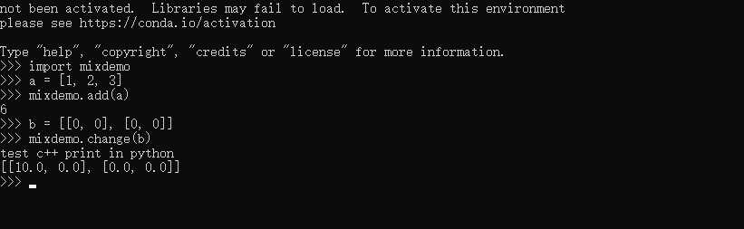

心情
好久没写我这段时间干的事了，我在帮科技楼的学长学姐做沙钢的线上项目的时候，诞生了这个想法，用python和c++混合编程来做本地的科学计算，其实用matlab也行，但我想试试别的，我花了三天时间，写了一个命令行程序，他们用我这个程序来调试参数。怎么说？还是挺有成就感的。仅仅限于成就感，我不想再接着跟这个项目了，因为主要部分早就完成，现在就是修修补补，每次他们叫我，都是小修小补的琐碎的事，如果没钱，我完全没动力，也没理由帮他们。
两种语言的优势
python做杂事是一把好手，啥都行，啥都不精，我试着用它写过大型的科学计算程序，计算太慢了。c++运行速度快，但是画图，调用excel，解析公式不太顺手。好，两者的优势结合起来，大型的科学计算，如果既有c++的速度，也有python的方便，那多爽。
如何结合？
用c++写一个动态链接库，让python调用，就可以了，我在win10下用VS2019写的。但是最好别用2019版，用2017或者更早一点的版本比较好，2019版编译出来的库在其他电脑上可能会缺失某些库，不能调用。
有一个现成的库实现了这个功能，叫pybind11，去github上搜一下，clone下来。为了好找，把它和自己的工程文件夹放在同级目录下面。
VS的配置
我PC上的python是python3.7，用anaconda安装的，因此，在VS里面，这样配置：
在项目的属性页中，
- 配置-->
Release(如果配置成debug，会出错，这样的工程没办法在VS里面debug) - 平台-->
x64(如果编写给64位机器使用，选x64，如果是32位，选win32) - 高级-->目标文件扩展名-->
.pyd - VC++目录-->包含目录-->
- ...\Anaconda\include
- ...\pybind11\include
- VC++目录-->库目录-->...\Anaconda\libs
- 链接器-->输入-->附加依赖项-->
- python37.lib
- python3.lib
quick start
先来一个最简单的示例，我们写的是一个python的模块
|
|
把库的头文件
include了先
|
|
为了方便
|
|
先定义一个函数，这是一个累加数组里的所有数的函数，返回最后计算的结果，要使用它，要先
|
|
不然没法使用
vector
接下来
|
|
开始定义这个
python的模块，第一个参数必须和工程名字一样，我的叫mixdemo
|
|
用
doc()函数来编写这个模块的注释
|
|
用
def()函数来写把刚才写的add加入模块，顺便添加注释
编译。。。编译成功了的话，会生成
mixdemo.pyd,mixdemo.lib等文件
打开cmd，cd到mixdemo.pyd的所在目录，在命令行输入
|
|
然后输入
|
|
现在我们就可以在这里使用mixdemo里面的函数了，定义一个数组
|
|
然后用add函数来计算累加的结果
|
|
更进一步
想在c++写的函数里面使用输出也可以，定义一个函数
|
|
在python中调用
|
|
结果
更刺激一点，把python的函数作为变量传入c++函数里
要先
|
|
然后写个函数，传入的函数的参数的数据类型和数量都必须完全符合
|
|
这个f就是传入的函数，它返回一个int，参数是一个vector<int>
来，在python中试验，先用c++的函数来试试
>>> mixdemo.solve(a, mixdemo.add)
再用python的函数来试验
>>> def add(ls):
... sum = 0
... for number in ls:
... sum += number
... return sum
...
>>> add(a)
6
>>> mixdemo.solve(a, add)